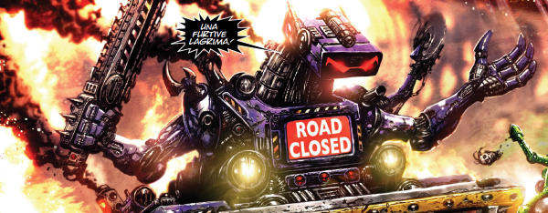

On the face of it, this is Thunderbirds with robots, but with Pat Mills at the helm it also becomes a blend of music hall pastiche and union negotiations, where the robot proletariat must fight or buckle under the pressures of a capitalist system that sees them simply as fodder. Y'know, like if you work for Amazon.
The key protagonists are Hammerstein (an ex war droid) & Ro-Jaws (a sewage droid), both under the heel of boss Mr. Ten Percent (a human brain in a robot body) and his enforcer Mek-Quake (a kill-dozer).
Threads from Ro-Busters feed into almost the entire Millsverse before coming full circle years later. Hammerstein changed heads and became the lead in The A.B.C. Warriors, then was hired by Nemesis the Warlock (where Termight itself was inspired by the tubes present in The Fall & Rise storyline of Ro-Busters). Ro-Jaws became mainly an editorial fixture who was perhaps not warlike enough for the initial line-up of Warriors, but did eventually join them after working as a butler for Nemesis. Mek-Quake has had various forms and, in a timeless capacity, also works for Tharg in the present. Even Mr. Ten Percent ended up crossing over, with an extensive back story in Savage.
Art by Clint Langley
| Story Title | Parts | Pages | w indicates a wraparound coverCovers | Year(s) | Issues | Writer | Artist | Colourist | Letterer |
|---|---|---|---|---|---|---|---|---|---|
| Prologue: Day of the Robot | 1 | 2 | 0 | 1978 | SL1 | Pat Mills | Carlos Pino | [b&w] | Tom Frame |
| [The North Sea Tunnel] | 1 | 9 | 0 | 1978 | Reprints: SFS8SL1 | Pat Mills | Carlos Pino | <-- 3pp, [b&w] | Tom Frame |
| [The Preying Mantis] | 1 | 6 | 0 | 1978 | SL2 | Pat Mills | Carlos Pino | <-- 1p, [b&w] | Peter Knight |
| [The Red Mist] | 2 | 12 | 0 | 1978 | Reprints: SFS8 (partial: pp1‑6, 9‑12)SL3-4 | Pat Mills | Dave Gibbons: 1 Carlos Pino: 2 various | <-- 4pp, [b&w] | Dave Gibbons: 1 Jack Potter: 2various |
| [Midpoint] | 2 | 10 | 5: Kevin O'Neill 1 | 1978 | SL5-6 | Bill Henry | Ian Kennedy | <-- 4pp, [b&w] | Peter Knight: 1 Tony Jacob: 2 various |
| [The Ritz Space Hotel] | 6 | 38 | 9: Graham Cotton 1 | 1978 | SL7-12 | Pat Mills | Carlos Pino | <-- 10pp, [b&w] | Tony Jacob: 1 Peter Knight: 2, 4 Steve Potter: 3 unknown: 5 John Aldrich: 6various |
| [Farnborough Droid Show] | 2 | 14 | 0 | 1978 | Reprints: SFS11SL13-14 | V. Gross | Ian Kennedy | <-- 3pp, [b&w] | John Aldrich |
| [Massacre on the Moon] | 5 | 34 | 16: Kevin O'Neill 19: Graham Cotton 2 | 1978 | SL15-19 | Chris Lowder | Carlos Pino: 1, 3, 5 Jose Luis Ferrer: 2, 4various | <-- 10pp, [b&w] | Jack Potter: 1 Paul Bensberg: 2‑3 Peter Knight: 4‑5various |
| [The Tax Man Cometh] | 3 | 23 | 0 | 1978 | SL20-22 | Chris Lowder | Jose Luis Ferrer: 1, 3 Carlos Pino: 2 various | <-- 6pp, [b&w] | Tom Frame / Bill Henry: 1 Paul Bensberg: 2 Peter Knight: 3various |
| Death on the Orient Express | 2 | 12 | 0 | 1978 | Reprints: 2KYB'94 M4.01 86-87 | Pat Mills | Dave Gibbons | [b&w] | Dave Gibbons |
| [Hammerstein's War Memoirs] | 5 | 30 | 88: Kevin O'Neill [reprinted 2KA'88] 91: Dave Gibbons 2 | 1978 | Reprints: 2KA'88 (partial) X24 88-92 | Pat Mills | Kevin O'Neill: 1, 3 Mike Dorey: 2 Dave Gibbons: 4 Mike White: 5various | [b&w] | John Aldrich: 1 Jack Potter: 2 Peter Knight: 3 Dave Gibbons: 4 Tom Frame: 5 various |
| Ro-Jaws' Memoirs | 5 | 30 | 95: Mike Dorey 1 | 1978-1979 | 93-97 | Pat Mills | Mike Dorey | [b&w] | Steve Potter: 1‑2 Peter Knight: 3‑5 various |
| The Terra-Meks | 4 | 27 | 99: Dave Gibbons 1 | 1979 | Reprints: 2KA'87 M4.02 98-101 | Pat Mills | Dave Gibbons | [b&w] | Dave Gibbons |
| The Fall and Rise of Ro-Jaws & Hammerstein | 13 | 78 | 103: Kevin O'Neill 108: Mike McMahon 112: Kevin O'Neill 114: Mike McMahon 4 | 1979 | Reprints: X24103-115 | Pat Mills | Kevin O'Neill: 1‑2, 9‑10 Mike McMahon: 3‑6, 11‑13 Mike Dorey: 7‑8 various | [b&w] | Peter Knight: 1‑7, 9‑13 P. Bensberg: 8 various |
| Avalanche! | 1 | 10 | 1979 | 2KA'80 | unknown | Kev F Sutherland | [b&w] | unknown | |
From Ro‑JawsRo-Jaws | 1 | 6 | 0 | 1979 | SLA'80 | unknown | unknown | [b&w] | unknown |
| [Earthquake] | 1 | 6 | 1980 | 2KA'81 | Chris Stevens | Dave Harwood | [b&w] | Peter Knight | |
| [Mafia Meltdown] | 1 | 8 | 0 | 1980 | SLA'81 | unknown | unknown | [b&w] | unknown |
| Bax the Burner | 1 | 6 | 0 | 1981 | Reprints: M4.07 FCBD2 2KA'82 | Alan Moore | Steve Dillon | [b&w] | Tom Frame |
| Old Red Eyes Is Back | 1 | 6 | 0 | 1982 | Reprints: B2KSE1 X24 2KA'83 | Alan Moore | Bryan Talbot | [b&w] | Steve Potter |
Thunderbirds parody.[Stormeagles Are Go] | 1 | 6 | 1983 | 2KA'84 | Alan Moore | Joe Eckers | [b&w] | Steve Potter | |
From The A.B.C. WarriorsReturn to Ro-Busters | 12 | 82 | 1962: Clint Langley 1964: Clint Langley 1968: Clint Langley 1972: Clint Langley 4 | 2015-2016 | 1961-1972 | Pat Mills | Clint Langley | <-- | Annie Parkhouse |
| >> Posters << | |||||||||
Starlord Pin‑Up.Hammer-Stein and Ro-Jaws | ~ | 1 | 0 | 1978 | SL19 | n/a | Kevin O'Neill | <-- | n/a |
Star Pin‑Up.Hammerstein | ~ | 1 | 0 | 1979 | 103 | n/a | [photo of a model] | [b&w] | n/a |
Star Pin‑Up.Charlie - Hero of Northpool | ~ | 1 | 0 | 1979 | 111 | n/a | Dave Gibbons | <-- | n/a |
| Mek Wars! | ~ | 2 | 0 | 1979 | SFS2 | n/a | Kevin O'Neill | <-- | n/a |
Star Pin‑Up.Tyranno-Mek | ~ | 1 | 0 | 1979 | 116 | n/a | Dave Gibbons | <-- | n/a |
| [Ro-Busters] | ~ | 1 | 0 | 2001 | p2002 | n/a | Trevor Hairsine | <-- | n/a |
| [Terra-Meks] | ~ | 2 | 0 | 2017 | 2K40 | n/a | Cliff Robinson | Dylan Teague | n/a |
| >> Features << | |||||||||
2000AD Futuregraph.Preying Mantis | 4 | 4 | 0 | 1978 | Reprints: 2KA'82 [as 2‑page spread]89-92 | editorial | unknown | [b&w] | n/a |
| I, Robot | ~ | 1 | 0 | 1979 | SFS2 | editorial | [photo of a model] | <-- | n/a |
| Book of Robots | 4 | 8 | 1 | 1979 | 119-122 | editorial | photos, reprints | <-- 4pp, [b&w] | n/a |
Linked to The A.B.C. Warriors Supertitled: "Scissor‑Scan".Hammerstein and Ro-Jaws | ~ | 1 | 0 | 1987 | SFS10 | n/a | P. Smith | <-- | n/a |
Data‑File.Ro-Busters | 1 | 1 | 0 | 2001 | p2002 | editorial | n/a | <-- | n/a |
| >> Floating Covers << | |||||||||
| Ro-Bust-A-Move | ~ | ~ | 1 | 2007 | X24 | n/a | Boo Cook | <-- | n/a |
| year | episodes | pages |
| 1977 | 0 | 0 |
| 1978 | 31 | 196 |
| 1979 | 23 | 145 |
| 1980 | 2 | 14 |
| 1981 | 1 | 6 |
| 1982 | 1 | 6 |
| 1983 | 1 | 6 |
| 1984 | 0 | 0 |
| 1985 | 0 | 0 |
| 1986 | 0 | 0 |
| 1987 | 0 | 0 |
| 1988 | 0 | 0 |
| 1989 | 0 | 0 |
| 1990 | 0 | 0 |
| 1991 | 0 | 0 |
| 1992 | 0 | 0 |
| 1993 | 0 | 0 |
| 1994 | 0 | 0 |
| 1995 | 0 | 0 |
| 1996 | 0 | 0 |
| 1997 | 0 | 0 |
| 1998 | 0 | 0 |
| 1999 | 0 | 0 |
| 2000 | 0 | 0 |
| 2001 | 0 | 0 |
| 2002 | 0 | 0 |
| 2003 | 0 | 0 |
| 2004 | 0 | 0 |
| 2005 | 0 | 0 |
| 2006 | 0 | 0 |
| 2007 | 0 | 0 |
| 2008 | 0 | 0 |
| 2009 | 0 | 0 |
| 2010 | 0 | 0 |
| 2011 | 0 | 0 |
| 2012 | 0 | 0 |
| 2013 | 0 | 0 |
| 2014 | 0 | 0 |
| 2015 | 1 | 14 |
| 2016 | 11 | 68 |
| 2017 | 0 | 0 |
| 2018 | 0 | 0 |
| 2019 | 0 | 0 |
| 2020 | 0 | 0 |
| 2021 | 0 | 0 |
Comic strip data (excludes other content):